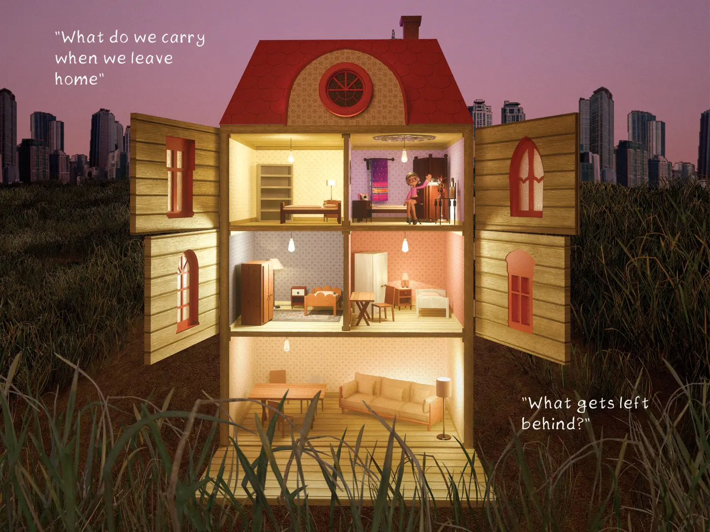
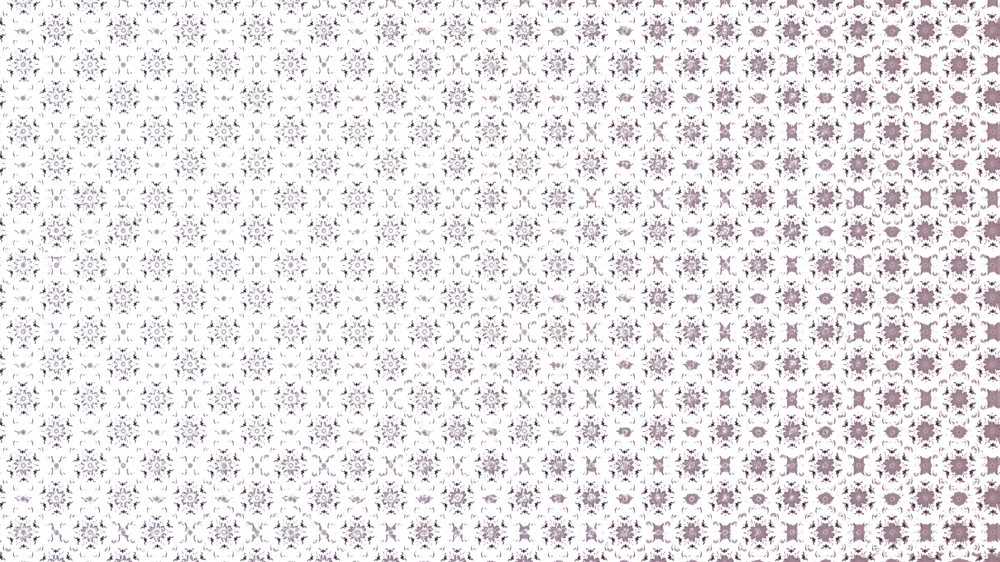
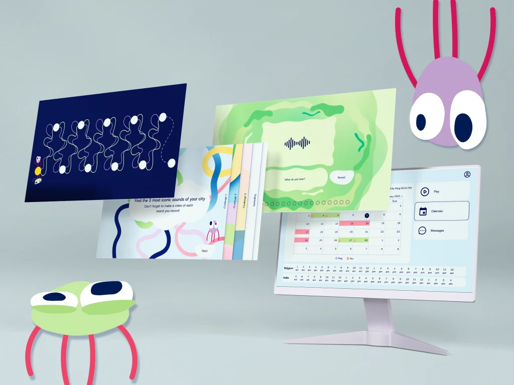
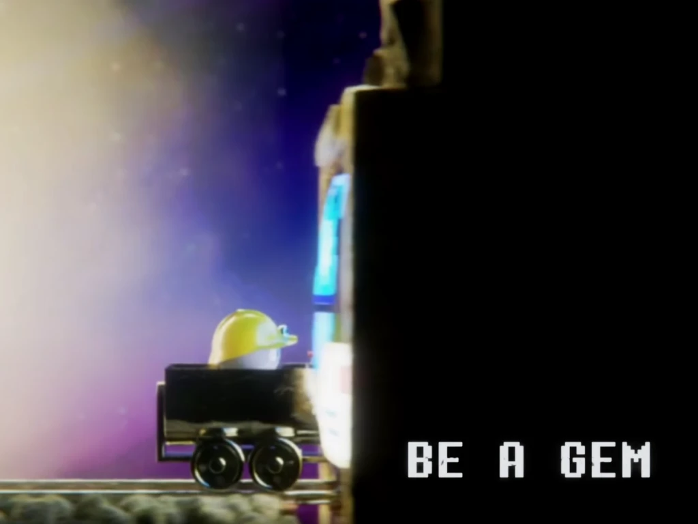
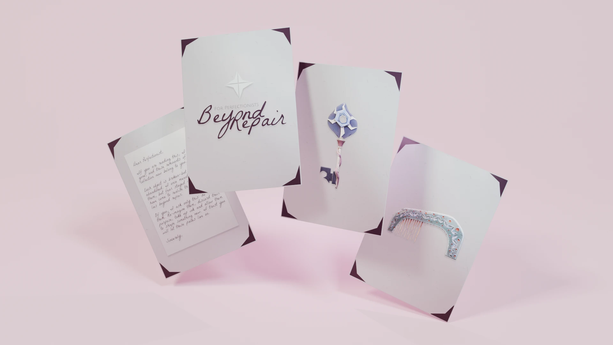
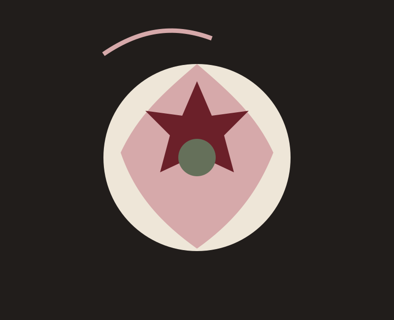

01Concept · 3D · Storytelling
The Things We Carry
A visual concept exploring memory, belonging and transformation.
 Sara Pereslényová
Sara Pereslényová
Multidisciplinary designer across concept development, visual storytelling, 3D and UX
I explore the space between concept development, visual storytelling, 3D and human experience.
See my work


MY WORK

01Concept · 3D · Storytelling
A visual concept exploring memory, belonging and transformation.

02Visual Design · UX/UI · Illustration
A plug-and-play online platform for a sound research organisation's project "The City Rings". Using a story-like format we will allow the children to become co-creators in this experience.
 03
03
3D · Game Design · Testing
A VR game that helps Hospitality Management students learn housekeeping.

04Creative Direction · Visual Design · Illustration
A video campaign against cyber-bullying that uses a metaphor to help empower body shaming victims.

05Concept · 3D · UX
Concept development for an immersive experience combining nature and technology.

063D · Visual Design
An exploration of transformation through form, colour and movement.
No projects in this category yet. Try another filter.
About me
I’m a multidisciplinary designer with a curious and inquisitive approach. I like asking questions, finding connections and turning complex ideas into something people can understand and feel.
My work moves between concept development, storytelling, visual design, 3D and UX. I am especially drawn to characters, unusual ideas and experiences with a little more meaning hiding underneath.
My approach
Understand the problem before deciding what the answer should look like.
Look for patterns, references and unexpected relationships between ideas.
Translate the idea into sketches, visuals, prototypes, 3D or whatever medium fits.
Test, discuss and iterate until the concept and execution support each other.
Get in touch
I’m interested in creative teams, internships, junior roles and interesting collaborations.